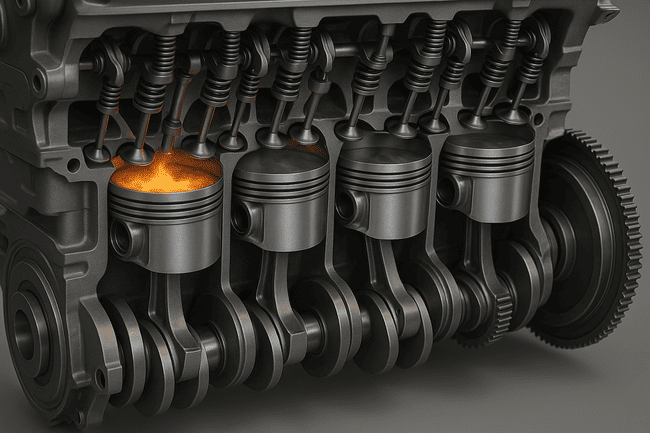

Research Internship at Universitat Politècnica de València
5-months research internship at CMT - Clean Mobility & Thermofluids, the research institute of the Universitat Politècnica de València.



Context
Part of the VEMOD project, aiming to develop a numerical model predicting the ignition delay time (IDT) of an air/fuel mixture in a spark-ignition engine, in order to reduce reliance on costly bench testing.
Skills Acquired
· Chemical kinetics and thermodynamics simulation
· Numerical modeling and multidimensional interpolation (RBF, GPR)
· Applied machine learning (neural networks, hyperparameter optimization)
· Experimental data analysis and post-processing
· Critical thinking and scientific methodology in a research context
· Technical English (written and spoken)
· Teamwork within an international research team
Software Used
· Python (Cantera, scikit-learn, PyTorch, Optuna)
· MATLAB
· C++